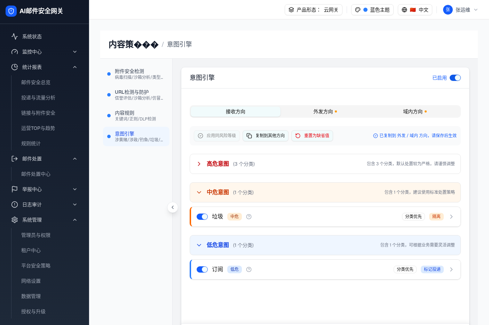
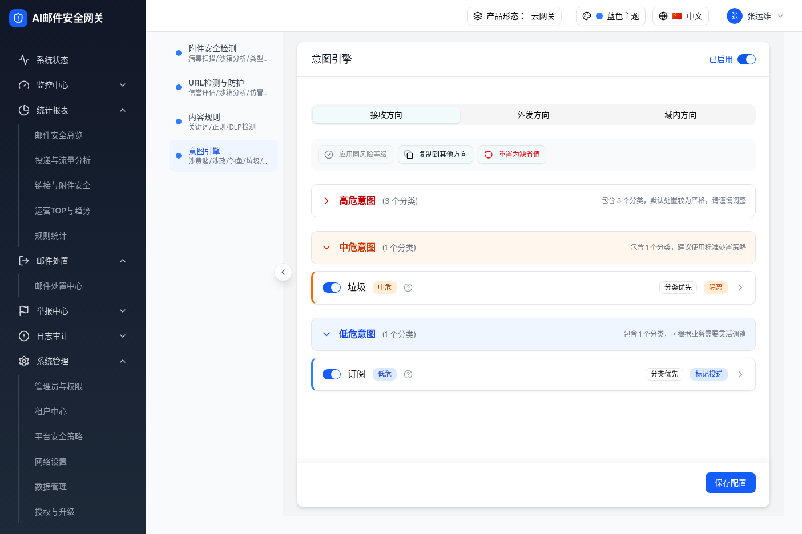
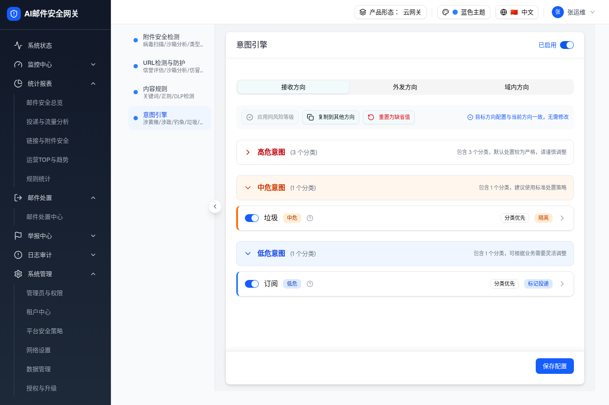

| 所属组件 | 2.2 内容策略抽屉 / 意图引擎全局操作栏「复制到其他方向」+ 方向 Tab + 底部「保存配置」（intent-engine-module.tsx + 外层 wrapper content-strategy-page.tsx） |
| 主文件 | filter-rules-pipeline-intent-engine/index.html |
| 触发路径 | 层级0 操作栏 →「复制到其他方向」→ 勾选目标方向 →「确认复制」→（本层）复制反馈 + 被改动方向 Tab 标记 →「保存配置」→ 标记与反馈清除 |
| 规格版本 | v2（2026-07-17）· demo 源 commit 887ac48 |
| 浏览器验证 | 2026-07-17，headless Chromium 访问运行态 demo（viewport 1405×936，/filter-rules/content 打开意图引擎）。实测：复制到「外发/域内」后，两个方向 Tab 出现琥珀色「未保存」标记点，接收方向无标记，操作栏出现蓝色反馈「已复制到 外发 / 域内 方向，请保存后生效」；点「保存配置」后 Tab 标记与反馈全部清除；目标方向与当前方向一致时复制不标脏，仅提示「目标方向配置与当前方向一致，无需修改」。共 3 张截图。 |
| 项 | 修复前（v1 / 差异 D-07） | 修复后（v2） |
|---|---|---|
| 未保存状态粒度 | 整个模块共用一个布尔 isDirty | 按方向追踪 dirtyDirections{receive,send,internal}，仅真正被改动的方向标脏 |
| 复制到其他方向 | 无条件 setIsDirty(true)，且提示显示在「当前方向」操作栏，令人误以为当前方向被改 | 仅对配置实际变化的目标方向标脏（深比较）；被改动方向 Tab 上打琥珀点；操作栏给出点名反馈「已复制到 X / Y 方向，请保存后生效」 |
| 目标与源一致 | 仍报「配置已修改未保存」（误报） | 不标脏，提示「目标方向配置与当前方向一致，无需修改」 |
| 保存后 | 模块级提示无外部重置入口，「配置已修改未保存」一直残留 | 外层保存自增 saveSignal，模块监听后清空各方向脏标记与反馈，回调 onDirtyChange(false) |
操作顺序：① 点「复制到其他方向」勾选目标 → ② 点「确认复制」看反馈 + Tab 标记 → ③ 点「保存配置」看清除。再次对已一致方向复制则提示「无需修改」。
当前状态：初始态，无未保存标记。

| 元素 | 实际文案/表现 | 说明 |
|---|---|---|
| 外发方向 Tab | 「外发方向」+ 琥珀点（aria-label=未保存） | dirtyDirections.send=true |
| 域内方向 Tab | 「域内方向」+ 琥珀点 | dirtyDirections.internal=true |
| 接收方向 Tab | 「接收方向」无标记（当前方向） | 复制源不被标脏 |
| 操作栏反馈 | 蓝色「已复制到 外发 / 域内 方向，请保存后生效」 | 4 秒后自动消失（copyFeedback 定时器） |


| 比对项 | demo 实际 DOM（agent-browser 快照） | 预览 HTML | 是否一致 |
|---|---|---|---|
| 复制后 外发 Tab | tab "外发方向 未保存" | 外发 Tab + 琥珀 .mark | ✅ |
| 复制后 域内 Tab | tab "域内方向 未保存" | 域内 Tab + 琥珀 .mark | ✅ |
| 复制后 接收 Tab | tab "接收方向" [selected]（无「未保存」） | 接收 Tab 无 .mark | ✅ |
| 复制反馈文案 | 「已复制到 外发 / 域内 方向，请保存后生效」 | 同文案（蓝色 hint） | ✅ |
| 保存后 Tab | 三个 tab 均无「未保存」后缀 | 预览保存后清除全部 .mark | ✅ |
| 一致场景反馈 | 「目标方向配置与当前方向一致，无需修改」，无 Tab 标记 | 同文案，不标脏 | ✅ |